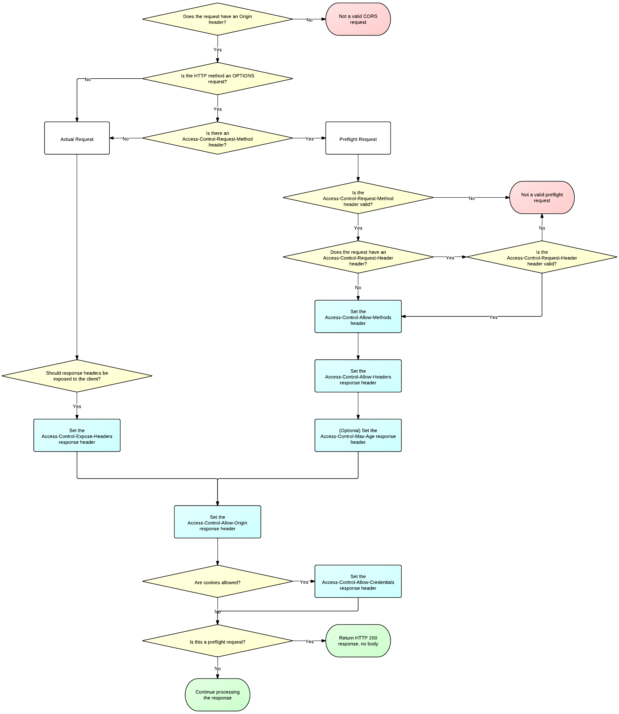

原文地址 Using CORS
部分内容我精简了部分内容, 如果想看全部可以去上面的原文地址查看
同时也附上脑图
前言
Cross-Origin Resource Sharing(CORS) 是W3C为浏览器制定的可以跨域通信的规范. 通过使用 XMLHttpRequest 对象, CORS可以让开发者方便的进行跨域通信, 就像在使用同域通信一样.
CORS的使用十分简单. 想象一下有一个网站 a.com 想要获取另一个网站 b.com 的数据. 但由于浏览器的同源策略, 这样的请求将会被禁止. 这时我们可以使用CORS, 通过添加一些特殊的请求\响应头, 可以让 a.com 访问 b.com 的数据.
通过上面的例子我们可以看出, CORS的支持需要客户端和服务器同时支持才行. 幸运的是, 如果你是一名客户端的开发人员(如前端工程师), 绝大多数的技术细节都会被隐藏掉.
这篇文章将讲述客户端如何发送一个跨域请求, 而服务器又将如何去处理和支持跨域请求.
发送一个跨域请求
时至今日, 发送一个XMLHttprequest请求已经是一个简单的事情, 这里我不在过多赘述.
根据浏览器的同源策略, 当请求的地址与来源地址的协议\域名\端口中的任一值不相同时, 均视为是一个跨域的请求.
XMLHttprequest 的 withCredentials 属性
跨域请求通常不会携带cookies信息. 为了能让跨域请求带上cookies, 你需要将做如下设置:
1 | xhr.withCredentials = true; |
为了能让这个属性正常工作, 你还需要在服务器端在响应是带上Access-Control-Allow-Credentials , 同时它的值必须为true. 更多的内容可以看服务器设置的那一部分.
1 | Access-Control-Allow-Credentials: true |
设置withCredentials为true后, 在于服务器进行通信时会携带这个域名下的所有cookies, 同时服务器也可以在它的于域名下设置cookies. 但值得注意的是, 这些cookies仍然遵守浏览器的同源策略, 你无法通过javascript访问这个域名下的cookies, 它只被这个域名的服务器控制.
为服务器增加跨域请求的支持
大部分跨域请求的重要操作实在浏览器和服务器之间进行的. 浏览器在跨域请求期间会代表客户端在请求上增加行的请求头, 有的时候还会增加新的请求. 这些操作对于开发者来说是透明, 但是这些请求仍然可以被抓包工具捕获.

浏览器的开发者来实现浏览器端的跨域请求细节, 这节内容来介绍如何配置服务器来支持跨域请求.
跨域请求的分类
通常将跨越请求分为”简单请求”和”非简单请求”两类.
简单请求遵循以下的规则
首先它的请求方式只能是GET, POST, PUT
同时的它的请求头部只能包含上面的那几个类型, 值的注意的是Content-Type只能是罗列出的三种(正好是form的entryType的三个值).
对于简单请求, 浏览器可以自行解决其中的跨域问题. 例如我们熟知的一个跨域通信的解决方式JSON-P就是利用GET发送一个简单请求来规避跨域的问题.HTML中的表单提交也不需要处理跨域问题.
任何不符合上述条件的请求都算作非简单请求, 浏览器在处理非简单的跨域请求时会与服务器进行额外的通信(称之为预检请求), 将在下面介绍.
处理简单请求
通过这个cors-demo我们可以方便的查看浏览器与服务器之间的同信.
当浏览器发送一个简单请求时, 我们打开浏览器的Network面板可以看到一个如下的请求(删除部分内容)
1 | GET /get HTTP/1.1 |
我们需要注意的一点是, 所有的跨域请求(无论简单或者非简单)总会包含一个Origin的请求头部, 这个属性的值由浏览器添加, 而且不受用户控制. 它的值由协议(如: http), 域名(如: a.om)和端口(只有它不是默认值时才包含, 如80端口)组成, 说明请求的来源.
包含Origin的请求不一定是跨域请求, 但是跨域请求一定包含Origin. 一些同源的请求同样也会包含Origin请求头.例如, Firefox浏览器不会在同源的请求中添加Origin, 但是Chrome和Safari会在同源的POST/PUT/DELETE请求中添加Origin请求头(但是同源的GET不会添加).
浏览器会忽略掉同源请求中的的CORS响应中的设置.
然后我们来看一个有效的跨域请求响应
1 | Access-Control-Allow-Origin: http://localhost:8080 |
所有与跨域请求相关的HTTP头部都以Access-Control-开始, 下面是它们的详细信息
Access-Control-Allow-Origin (必选)
所有有效的跨域响应都必须包含这个请求头, 没有的话会导致跨域请求失败. 它的值可以是请求中的
Origin的值, 也可以设置为*来表示可以响应所有来源的请求.Access-Control-Allow-Credentials (可选)
默认情况下跨域请求不会携带cookies信息. 如果需要请求携带cookies信息, 则需要将这个值设置为
true, 如果不需要就不要设置这个值, 而不是将它设置为false.这个请求头需要与 [withCredentials](#XMLHttprequest 的 withCredentials 属性) 配合使用. 只有两个值都设置为
true的时候才能够在请求中携带cookies信息. 当withCredentials设置为true, 而响应中不包含Access-Control-Allow-Credentials时, 请求会发生错误.Access-Control-Expose-Headers (可选)
XMLHttpRequest2对象上的
getResponseHeader()方法可以让你获取到响应中头部信息, 但在跨域请求中,你只能获取到以下信息- Cache-Control
- Content-Language
- Content-Type
- Expires
- Last-Modified
- Pragma
如果你希望客户端能过获取其他的头部信息, 可以设置这个值.
处理一个非简单请求
对与开发者来说, 发送一个跨域的非简单请求跟发送一个同域请求没什么区别.但事实上浏览器会发送两个请求, 第一个请求(成为预检请求)会像服务器确定是否接受这个跨域请求, 第二个才是真正的发出请求. 浏览器自动的处理这两个请求, 同时预检请求也是可以被缓存的, 而不用每次请求都需要发送预检请求.
下面是一个预检请求
1 | OPTIONS /cors/post HTTP/1.1 |
如同简单跨域请求一样, 在预检请求中也包含了Origin请求头, 同时这个请求的方式OPTIONS(所以你必须确定你的服务器能够正常的处理这中请求). 它同时也包含了其他的请求头.
Access-Control-Request-Method
这个请求头的值就是正式请求的请求方式, 上面的那个例子就是POST
Access-Control-Request-Headers
它的值是一个由逗号分隔的正式请求中请求头的列表.
预检请求是在实际的请求发出前先向服务器确认是否能够处理这个请求. 服务器应该检查上边两个请求头的值, 来判断这个请求是否有效.
如果服务器确认这个请求有效, 那么它会做出如下的响应
1 | HTTP/1.1 200 OK |
Access-Control-Allow-Origin (必选)
如同简单跨域请求一样, 预检请求的响应也必须包含这个值
Access-Control-Allow-Methods (必选)
由逗号分隔的HTTP请求方式, 在其中的值表示服务能够接受这中请求方式的跨域请求.
值得注意的是虽然预检请求只是针对单个请求方式进行检测, 但是你仍可以返回一个你所支持的请求方式列表.这样做的好处是方便对预检请求进行缓存.
Access-Control-Allow-Headers (当预检请求中包含Access-Control-Request-Headers时是必须的)
由逗号分隔的支持的请求头部列表, 与
Access-Control-Allow-Methods类似, 虽然预检请求中只有很少的一部分请求头, 但是你仍然可以返回所有你支持的列表, 原因也是为了缓存.Access-Control-Allow-Credentials (可选)
同简单请求
Access-Control-Max-Age (可选)
在每个请求前面都发送一个预检请求是很浪费资源的, 这个值允许你设置预检请求的缓存时间, 单位是秒.
一旦预检请求通过服务器的检查, 那么浏览器会随后发送实际的请求. 实际请求的处理与简单请求一样.
如果服务器想要拒绝一个跨域请求, 那么他可以直接回复一个简单的响应(如 HTTP 200), 但在响应头中不要包含任何与CORS相关的响应头设置. 服务器也可能会因为预检请求不合法而拒绝这个请求. 如果预检请求中不包含正确的CORS头部设置, 它就不会发送实际的请求.
当跨域请求发生错时, 浏览器会调用onerror事件, 同时会在控制台打印相关的错误信息.
最后附上一个服务器端处理跨域请求的流程图
